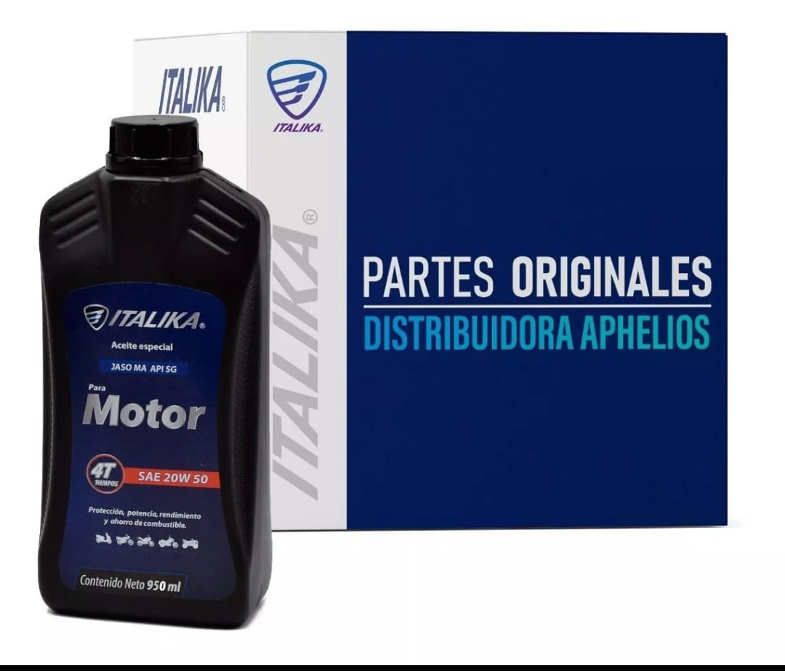
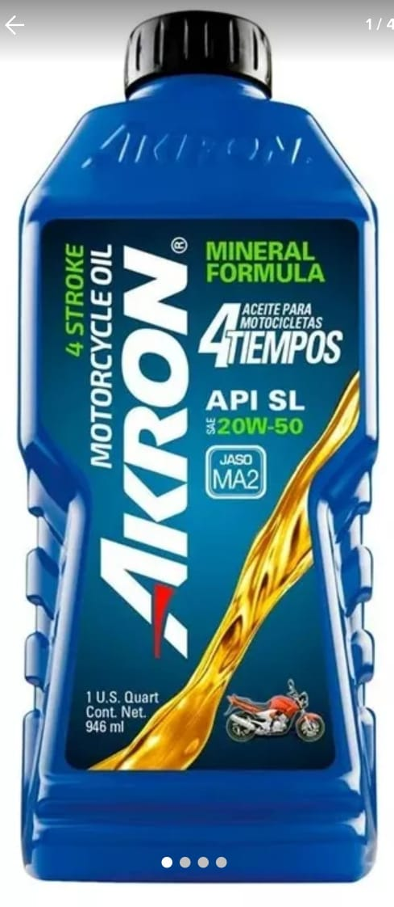
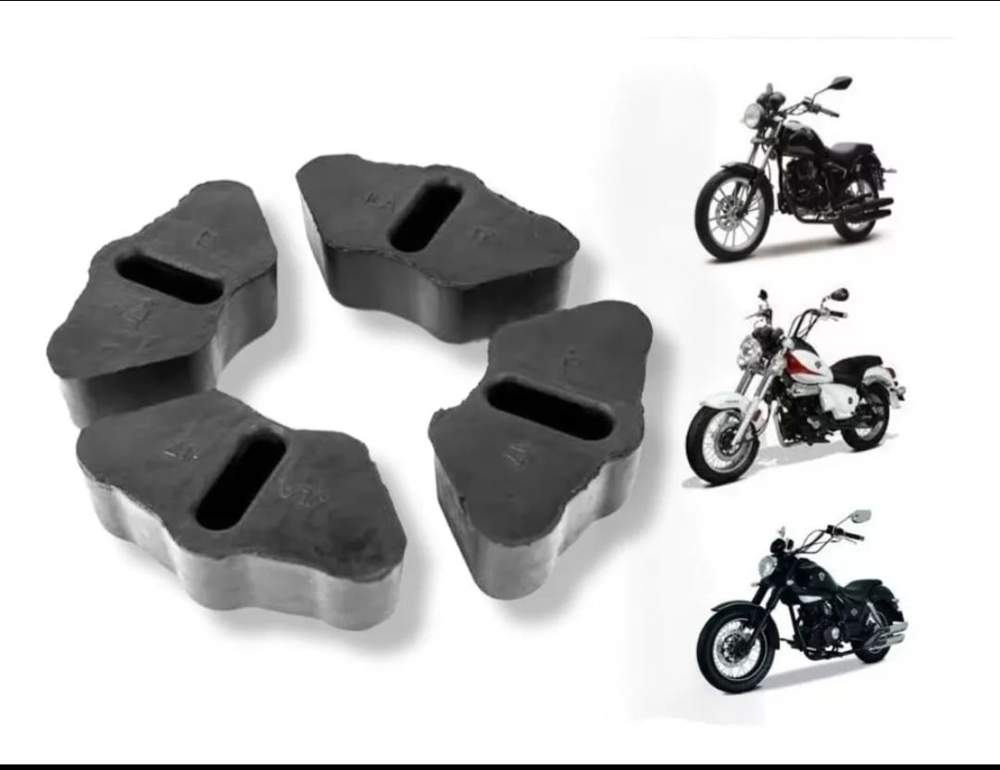
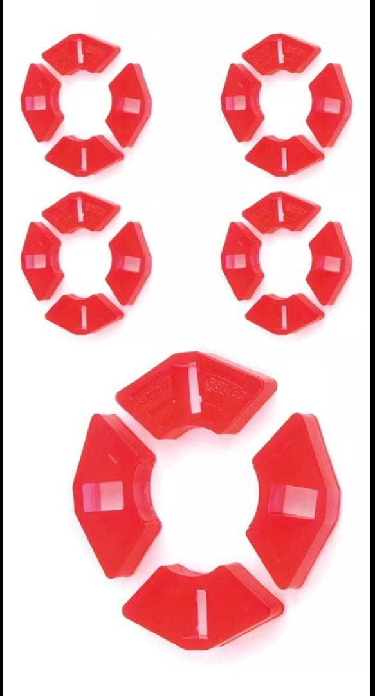
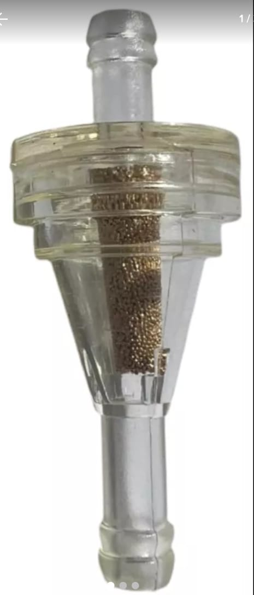
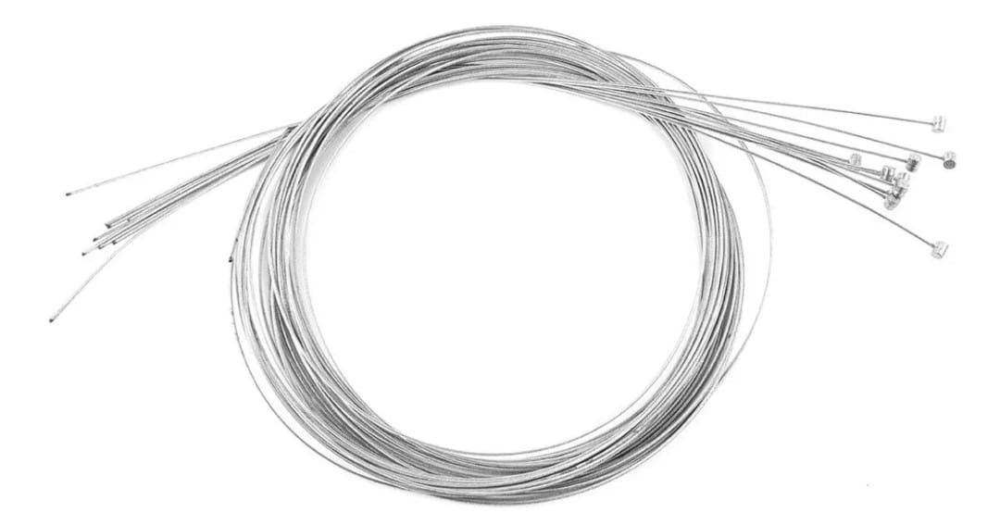
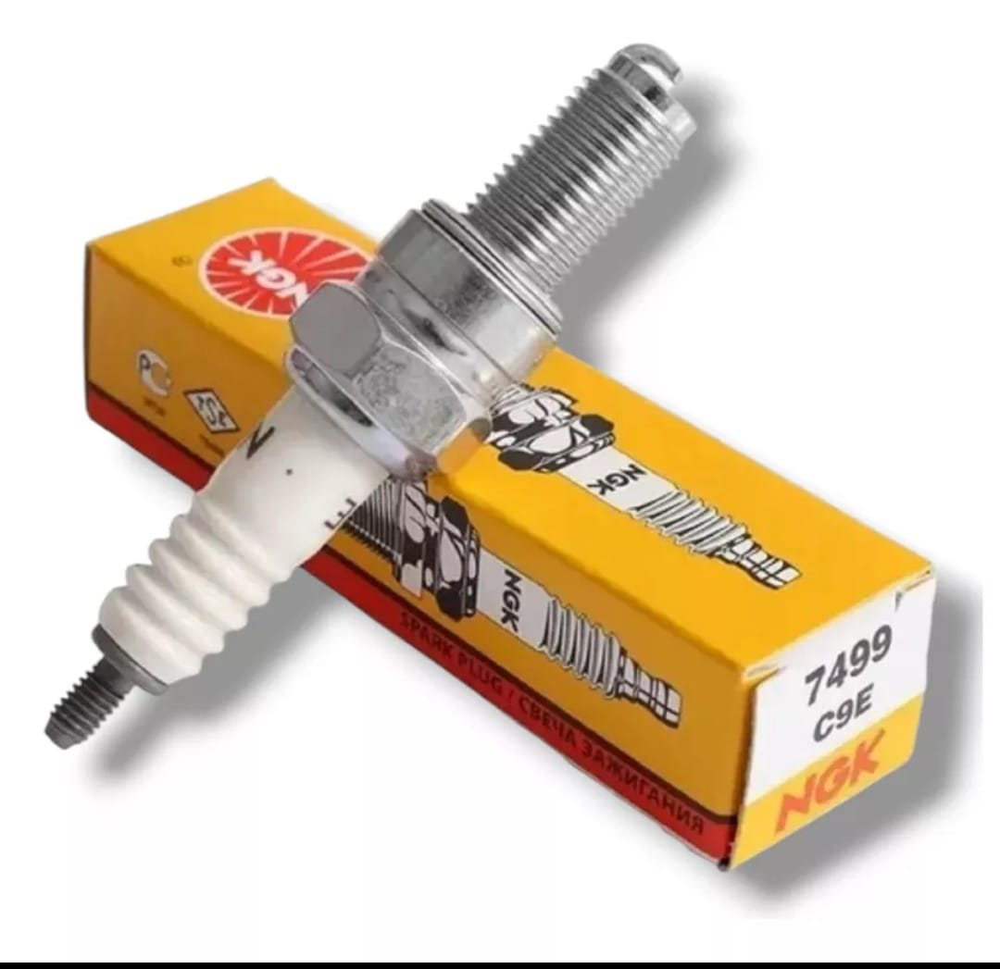
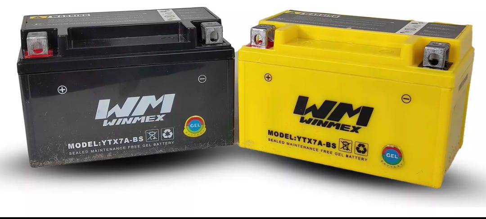
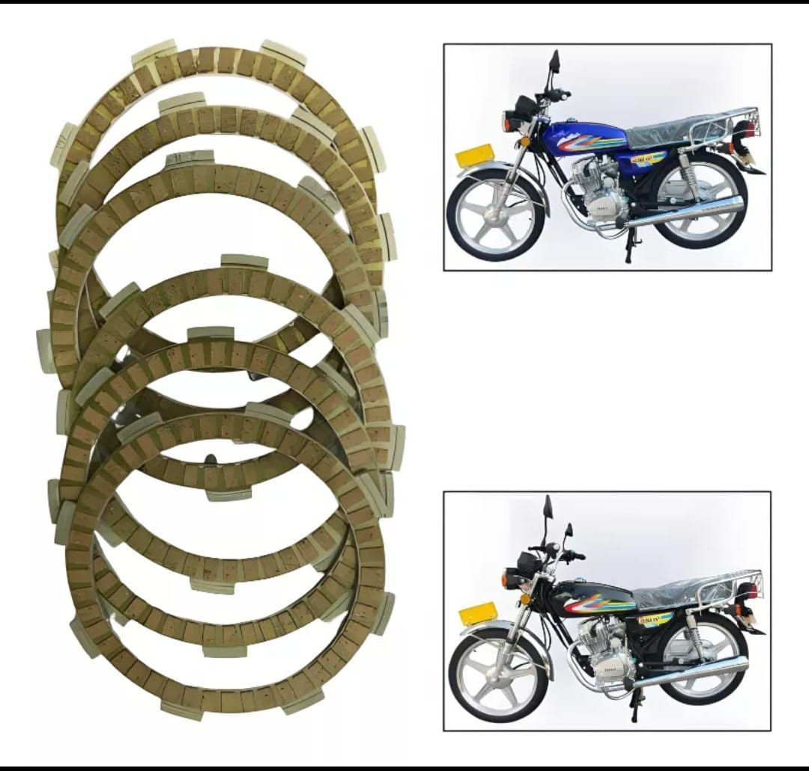
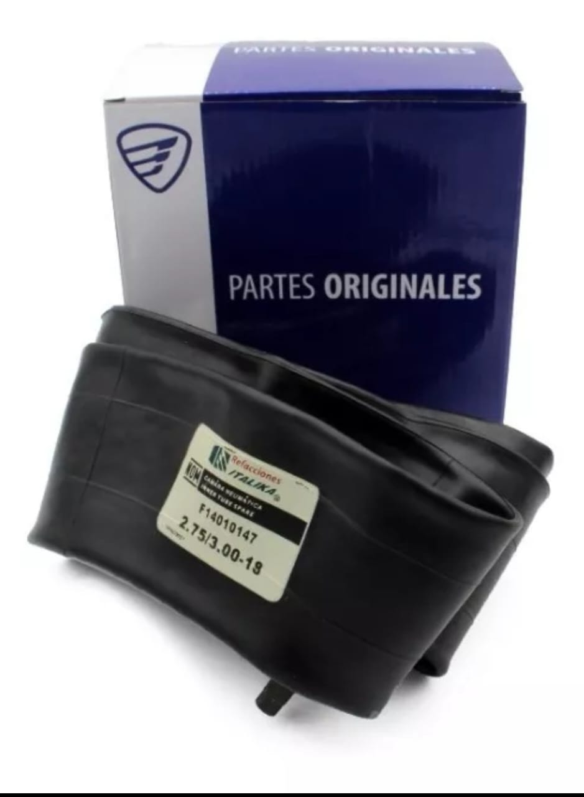

| Pieza disponible |
Descripción |
|  |
Aceite Especial Motor 4 Tiempos 20w-50 950ml Italika OriginalAplicaciones: Motor 4 tiempos
Aceite multigrado de base mineral, para motores de 4 tiempos con uso en carretera o ciudad.
Satisface los requerimientos de los principales fabricantes de motores de 4 tiempos.
|
|  |
AKRON® MOTORCYCLE 4 STROKE
Viscosidad óptima para altas temperaturas
API SL para motocicletas con motores de cuatro tiempos.
|
|  |
¡Optimiza el rendimiento de tu moto con este juego de damper de tracción original Italika!
Este juego de damper de tracción original está diseñado para absorber impactos y reducir vibraciones en la transmisión, mejorando la estabilidad y suavidad en la conducción.
Hecho con materiales duraderos, es ideal para mantener tu moto en condiciones óptimas.
|
|  |
GOMAS DE SPROCK TRASERO
|
|  |
FILTRO DE GASOLINA PIEDRA UNIVERSAL
|
|  |
CHICOTE CABLE DE ACERO PARA MOTOCARROS 2 X 3000 PARA CLUTCH UNIVERSAL
|
|  |
La bujía NGK modelo 7499 es una opción ideal para quienes buscan un rendimiento óptimo en sus motocicletas y cuatriciclos.
Diseñada específicamente para modelos como Vento, Tornado 250, Storm 250, Rocketman 250 y Falkon 250, esta bujía garantiza una ignición eficiente y un funcionamiento suave del motor.
Su construcción de alta calidad asegura durabilidad y resistencia, lo que se traduce en un menor desgaste y un mejor rendimiento a largo plazo.
|
|  |
Esta batería no se maneja con ácido.
Esta batería no se necesita preparar, ya viene cargada y lista para usar, sólo atornilla, y ¡LISTO!
Las medidas de esta batería son: -Largo 8.5cm -Alto: 9.5cm -Ancho: 15cm
|
|  |
#Pastas De CT100/PLATINA 100/DISCOVER 125 M/DISCOVER 125 ST/DISCOVER 125 5G original Calidad
#De parte original: 36JE0024
#Aplicaciones: -Bajaj CT100 -Bajaj PLATINA 100 -Bajaj DSCOVER 125 M -Bajaj DISCOVER 125 ST -Bajaj DISCOVER 125 5G
|
|  |
Cámara 2.75/17
Cámara 3.00/18
Cámara 2.75/3.00 -18
Cámara 120/80/18
Cámara 2.75/21
Cámara 17, 18 Y 21
|